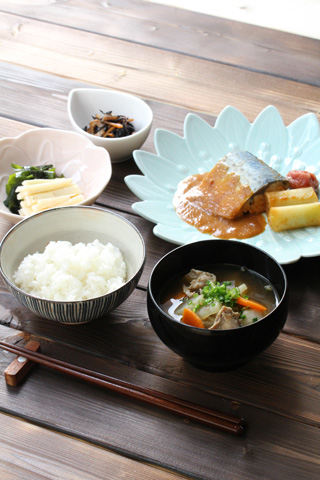
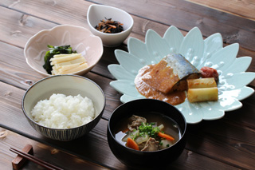
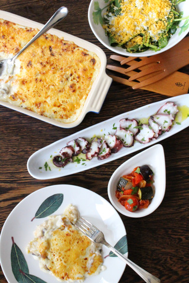
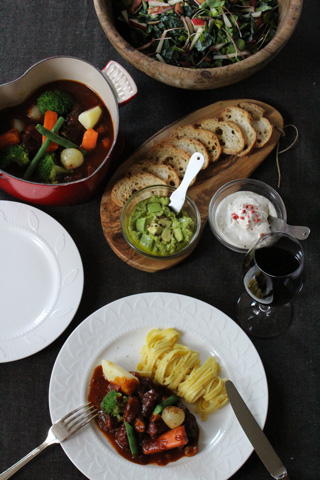
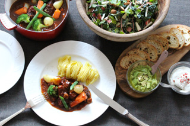

| 1月 | 2月 | 3月 | 4月 |
| 5月 | 6月 | 7月 | 8月 |
| 9月 | 10月 | 11月 | 12月 |
basic

料理の基礎レッスン（全12回）
絶対に押さえておきたい料理の基本技術を、人気の家庭料理を作りながら楽しく学んで頂きます。
料理上手になりたい女性のための、しっかり学べる基礎レッスン講座。野菜の切り方から料理技術まで、
レパートリーを広げながら、インスタ映えするフォトジェニックな盛付けもレクチャーします。
- 実習形式
- 講師:エミーズスタッフ
- 1年目から通えるレッスン
- 
-


- 
メニュー例（前菜＋メイン＋デザート）
レッスン料
● 入会金 不用
● 授業料 \51,840 （消費税込み／６回分）前半・後半でご入金いただきます。
※授業料には、材料費、教材、その他は全て含まれております。
● 振込先：三菱UFJ銀行 青山通支店 普）1599508 株式会社ベリーニ エミーズ事務局
レッスン日
（昼クラス） 11：30 ～ 14：00 火曜日 or 金曜日（それぞれ月に１回ずつ）
（夜クラス） 18：30 ～ 21：00 火曜日 or 金曜日（それぞれ月に１回ずつ）
※料理の内容により、終了時間は前後します。
※日程詳細は＜スケジュール＞をご確認ください。
注意事項
※お申込が5名様に満たない場合は開講しない場合がございます。
※キャンセルの場合も払戻ができませんので、ご注意ください。
※ご欠席の場合、授業日の２日前までにご連絡いただければ、当月内にてレギュラーコースにお振替いただけます。
（コンチネンタルコース・アレンジコース/お振替先の受講料差額分はご負担いただきます）。
持物
エプロン
筆記用具